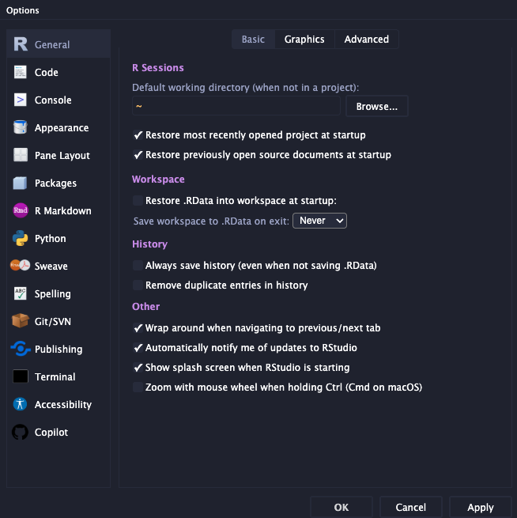
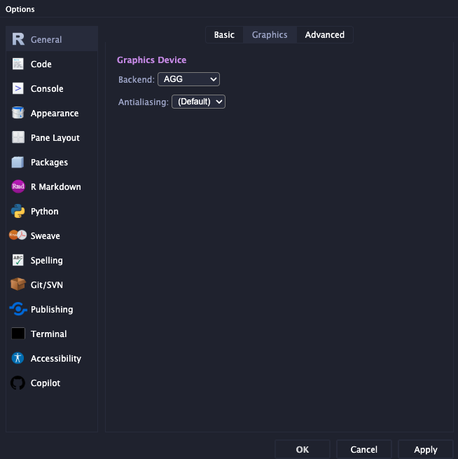
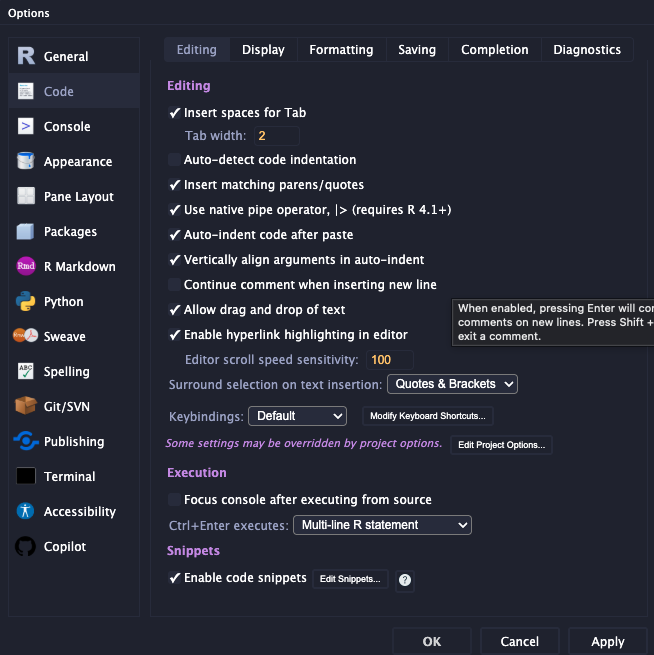
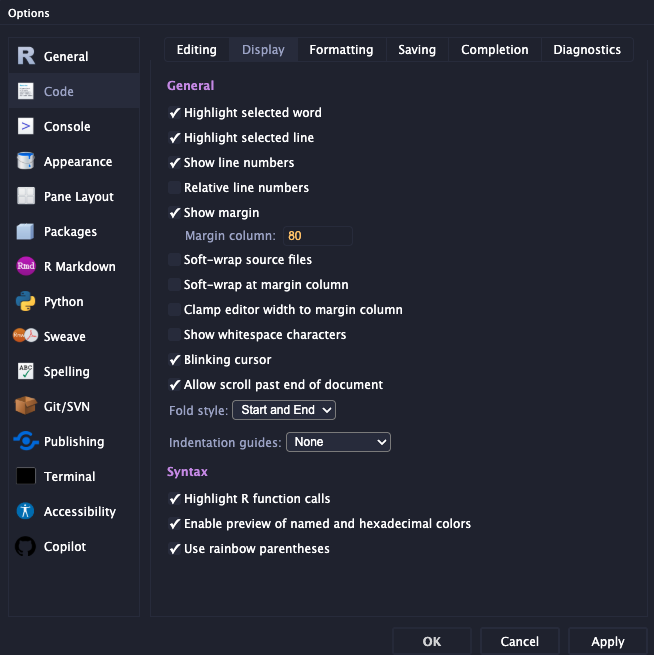
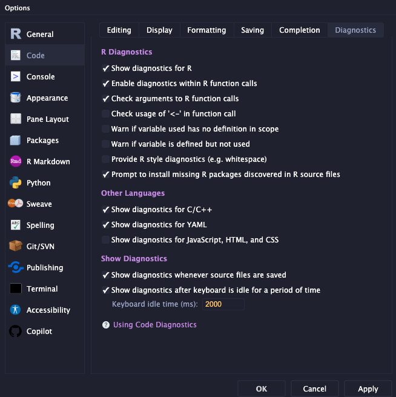
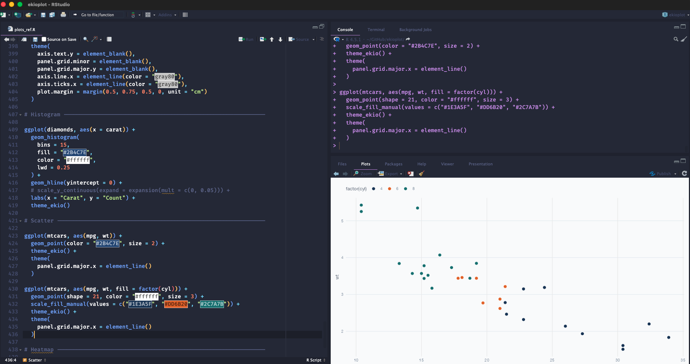
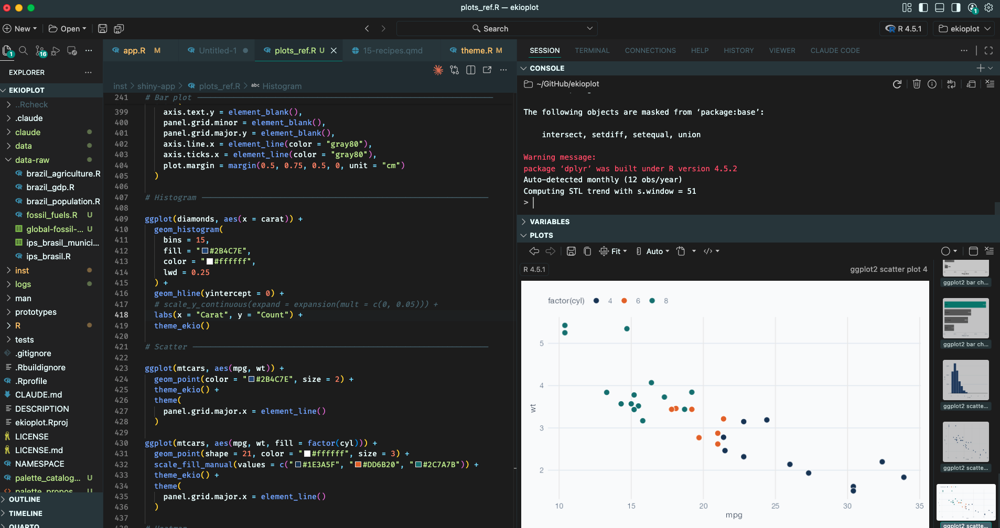

library(pak)
pak::pkg_install("tidyverse")
pak::pkg_install("viniciusoike/realestatebr")Instalando o R
Recentemente, tive que me adaptar a um fluxo de trabalho em que estou frequentemente reinstalando o R e seus pacotes do zero. Por isto, comecei a criar certos scripts para facilitar este tedioso processo. O primeiro passo é instalar o R.
Usando o pak
O pak é um pacote muito útil para facilitar a instalação de pacotes. Ele permite instalar pacotes de forma rápida e conveniente. Usando o pak, não precisamos usar funções diferentes para instalar pacotes do CRAN e do GitHub, por exemplo.
Pacotes
No passado, já fiz alguns posts comentando sobre “pacotes” essenciais para o R. A verdade, é que os pacotes essenciais variam muito segundo cada pessoa. A lista de pacotes abaixo é uma coleção dos pacotes que eu costumo usar com mais frequência, junto de outros que são úteis mas que eu raramente uso.
Data Cleaning
Code
packs_core_data <- c(
"tidyverse",
"data.table",
"janitor",
"lubridate",
"glue",
"fs",
"here",
"dtplyr"
)
packs_import_data <- c(
"foreign",
"readxl",
"haven",
"jsonlite",
"vroom",
"qs2",
"arrow",
"rio"
)
packs_database <- c(
"RPostgres",
"DBI",
"odbc",
"dbplyr",
"RSQLite",
"bigrquery",
"googledrive",
"sparklyr"
)Data Visualization
Code
core_data_viz <- c(
"ggplot2",
"patchwork",
"ggiraph",
"ggrepel",
"ggtext",
"paletteer"
)
packs_ggplot_extensions <- c(
"ggcorrplot",
"ggalluvial",
"ggbump",
"ggridges",
"ggdist",
"GGally",
"gganimate",
"ggnewscale",
"ggthemes",
"ggsci",
"ggradar",
"ggforce",
"ggfittext"
)
packs_interactive_viz <- c(
"dygraphs",
"plotly",
"DT"
)
packs_maps <- c(
"leaflet",
"ggmap",
"tmap",
"tmaptools",
"mapview"
)
packs_viz_others <- c(
"hrbrthemes",
# OBS: ragg is better than showtext
"showtext",
"ragg",
"viridis",
"wesanderson",
"MetBrewer",
"htmlwidgets",
"waffle"
)Time Series
Code
packs_core_ts <- c(
"forecast",
"tseries",
"urca",
"vars",
"xts",
"tsbox",
# disclaimer: I am the maintainer of the trendseries package
"trendseries"
)
packs_econometrics <- c(
"AER",
"lmtest",
"fGarch",
"rugarch",
"tsDyn",
"seasonal",
"bsts",
"urca",
"vars",
"strucchange",
"astsa"
)
packs_ts_fcasting <- c(
# Best for univariate or few series
"forecast",
# Best for multivariate or many series
"fable",
"fabletools",
# Standard prophet API
"prophet",
# ML Suite for time series
"modeltime",
# Generic ML suite for R
"tidymodels"
)
packs_ts_filters <- c(
# disclaimer: I am the maintainer of the trendseries package
"trendseries",
"mFilter",
"signal",
"robfilter",
"hpfilter",
"neverhpfilter"
)
packs_ts_others <- c(
"dygraphs",
"RcppRoll",
"feasts",
"lubridate"
)Spatial
Code
packs_core_spatial <- c(
"sf",
"terra",
"lwgeom",
"spdep"
)
packs_spatial_web <- c(
"osmdata",
"osrm",
"mapview",
"mapgl",
"leaflet"
)
packs_spatial_others <- c(
"elevatr",
"raster",
"stars",
"tidygeocoder",
"tidygtfs",
"geobr",
"r5r"
)Reports
Code
packs <- c(
"shiny",
"bslib",
"shinydashboard",
"shinydashboardPlus",
"shinythemes",
"gt",
"gtExtras",
"kableExtra",
"DT",
"flextable",
"reactable",
"fontawesome",
"rmdformats"
)Configurando o RStudio
Há algumas configurações básicas que já deveriam ser padrão para o RStudio. Acredito que o essencial seja a opção de não salvar os dados da sessão (RData), mas há muitas outras opções que melhoram muito a experiência de trabalho.
Básico
Entre as configurações básicas o mais importante, como comentado acima, é nunca criar o .RData. Além de tornar o seu fluxo de trabalho mais rápido, não salvar o .RData é considerado uma boa prática pois deixa o ambiente de trabalho sempre limpo. Na prática, diminui a chance do seu código quebrar. Do ponto de vista dos gráficos, o AGG como backend garante imagens de maior qualidade.


A lista de configurações sobre código é muito mais opcional do que as básicas acima. Em linhas gerais, recomendo o uso do pipe nativo, o uso de “rainbow parenthesis”, mostrar o número das linhas, incluir prévia das cores, entre várias outras opções listadas abaixo.



Temas e Fontes
Como fonte padrão, recomendo o uso do Fira Code, que é uma fonte de código aberto e gratuita. As instruções de instalação estão disponíveis no próprio GitHub linkado anteriormente. O Fira Code usa “ligaturas” para representar caracteres especiais como ==, !=, <=, >=, |>, <- etc. Em particular, acho que o Fira Code melhora muito a legibilidade do operador pipe nativo |> e do operador de atribuição <-.
Eu não gosto muito de nenhum dos temas padrão do RStudio. Se necessário, uso ou o ‘Material’ ou o ‘Idle Hands’. Sempre que possível instalo o rsthemes (disponível aqui) e aplico o “Material Palenight” ou “Material Ocean” como temas escuros e o “Flat White” ou “a11y-light” como temas claros.
Abaixo deixo como exemplo o que tenho no meu .Rprofile global para aplicar o Material Palenight como tema escuro e o Flat White como tema claro.
Code
if (interactive() && requireNamespace("rsthemes", quietly = TRUE)) {
rsthemes::set_theme_favorite(c(
"a11y-light {rsthemes}",
"Flat White {rsthemes}",
"Material Ocean {rsthemes}",
"Material Palenight {rsthemes}",
"Material {rsthemes}",
"One Light {rsthemes}"
))
rsthemes::set_theme_dark("Material Palenight {rsthemes}")
rsthemes::set_theme_light("Flat White {rsthemes}")
}Toda esta configuração resulta no print abaixo.

Usando Positron
Recentemente, a empresa Posit, desenvolvedora do RStudio, lançou uma nova versão do IDE, chamada Positron. Esta nova versão é construída com base no VSCode, da Microsoft, e tem objetivo de ser uma IDE otimizada para cientistas de dados. O Positron suporta tanto R quanto Python e acompanha algumas excelentes extensões pré-instaladas.
Atualmente, uso o Positron com maior frequência no meu dia-a-dia. O Positron é um pouco mais leve e rápido do que o RStudio, além de ter melhor integração com ferramentas de AI.

Entre as vantagens do Positron:
Melhor exibição de gráficos (usa agg como padrão).
Melhor integração com ferramentas de AI (Claude Code, Windsurf, Supermaven, etc.)
Explorer de arquivos muito mais funcional.
Mais extensões e mais opções no geral.
Entre as desvantagens do Positron:
Não tem alguns add-ins muito úteis do RStudio.
Gerenciamento de atalhos e personalização muito mais complexa.
IDE com “excesso de informação”. Enquanto é possível reduzir o ruído visual, ainda assim ele traz muito mais informação do que o RStudio.
Muitos mais bugs do que o RStudio. Algumas coisas só param de funcionar de vez em quando; alguns botões desaparecem.
Outros IDEs
Pessoalmente, só usei o Sublime Text 3 e o VSCode, além do RStudio e do Positron, citados acima. O Sublime Text 3 tem a vantagem de ser muito rápido e versátil, mas exige um setup considerável. Além disso, o Sublime tem pouquíssimo suporte para R, RMarkdown e Quarto; muitas vezes você está escrevendo tudo do zero, sem atalhos, sem autocomplete, e com render questionável. Na prática, acredito que não compensa usar. O VSCode é muito mais conveniente do que o Sublime Text 3, mas ainda acho que ele carece de algumas coisas básicas e exige um tempo de setup considerável para um bom uso de R. Sobretudo, após o lançamento do Positron, acho que não faz sentido algum usar o VSCode, já que o Positron é, essencialmente, o VSCode otimizado para R.